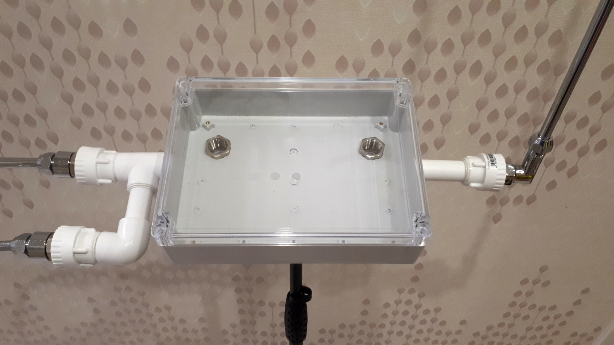

Almost any solution which is big enough to fit all PCBs is suitable for this project.
One of possible designs of cabinet, antennas and mic stand mount is described here.
This design is called Pipe Monster because it looks a bit ugly.
Theremin antenna are often made of water or gas pipes. Why not go deeper, and add more pipes?
This build is very simple. It's based on polypropylene water pipes and fittings.
Ehterwave antennas can be used as well.
You will need some polypropylene fittings and 20mm tubes. Fittings are with 1/2" thread.
Actual design may vary a lot.
Drill mounting holes in cabinet box.
Mount cabinet box.
Assembled.
Alternative construction with single mounting point for volume antenna.